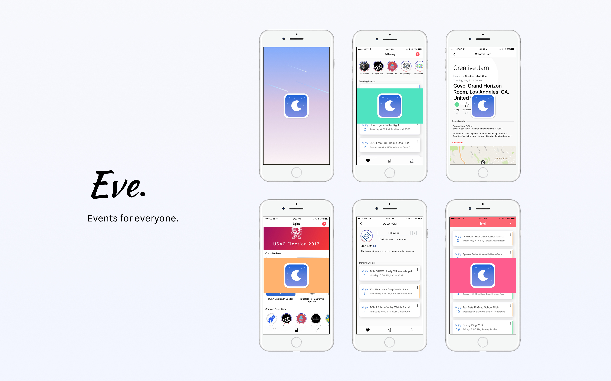

Eve,
Product Design, iOS Development
In collaboration with Matthew Lin,
Phillip Chao, Frank Chen, and Ashvin Vinodh
All the UCLA events in one app. Eve parses Facebook events, UCLA Engineering pages, UCLA Career Center, and UCLA Happenings page. The app integrates all the events you have subscribed and syncs with Facebook events rsvp status, and the events you are interested in.
